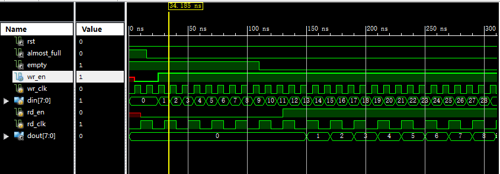
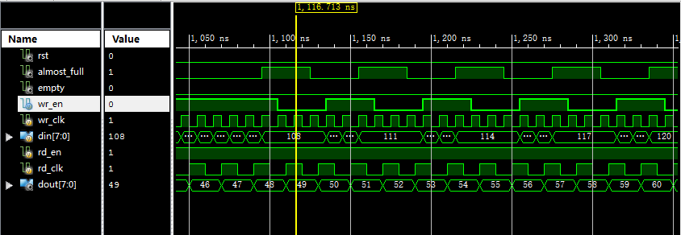

XILINX的IP核FIFO学习记录
什么是IP核？
在集成电路的可重用设计方法学中，IP核，全称知识产权核（英语：intellectual property core），是指某一方提供的、形式为逻辑单元、芯片设计的可重用模块。IP核通常已经通过了设计验证，设计人员以IP核为基础进行设计，可以缩短设计所需的周期。IP核可以通过协议由一方提供给另一方，或由一方独自占有。IP核的概念源于产品设计的专利证书和源代码的版权等。设计人员能够以IP核为基础进行特殊應用積體電路或现场可编程逻辑门阵列的逻辑设计，以减少设计周期。
IP核分为软核、硬核和固核。软核通常是与工艺无关、具有寄存器传输级硬件描述语言描述的设计代码，可以进行后续设计；硬核是前者通过逻辑综合、布局、布线之后的一系列表征文件，具有特定的工艺形式、物理实现方式；固核则通常介于上面两者之间，它已经通过功能验证、时序分析等过程，设计人员可以以逻辑门级网表的形式获取。
什么是FIFO?
FIFO是英文First In First Out 的缩写，是一种先进先出的数据缓存器，他与普通存储器的区别是没有外部读写地址线，这样使用起来非常简单，但缺点就是只能顺序写入数据，顺序的读出数据，其数据地址由内部读写指针自动加1完成，不能像普通存储器那样可以由地址线决定读取或写入某个指定的地址。
如何在ISE中调用FIFO的IP核？
- 在新建的工程上右击选择 New Source…
- 选择IP(Core Generator & Architecture Wizard)选项,并为将创建的IP核命名。
- 在FIFO Generator中设置相应的参数，比如写数据宽度，读数据宽度以及FIFO深度等等。设置完点击Generate，即可生成fifo核。
- 设置完即可看到工程中出现了一个fifo.xco的文件，点击该文件并双击下面的 View HDL Function Model ,即可查看fifo核的各个接口。
测试和仿真FIFO核
编写myfifo.v 模块用来测试fifo是否正常工作。
Myfifo.v 代码如下：
Verilog新手一个，虽然这只是一个简单的测试模块，但仍然会有一些常识错误，但我还是决定展示出来，毕竟勇于承认自己的不足，才会发现更好的自己。 -_-1
2
3
4
5
6
7
8
9
10
11
12
13
14
15
16
17
18
19
20
21
22
23
24
25
26
27
28
29
30
31
32
33
34
35
36
37
38
39
40
41
42
43
44
45
46
47
48
49
50
51
52
53
54
55
56
57
58
59
60`timescale 1ns / 1ps
//////////////////////////////////////////////////////////////////////////////////
// Company:
// Engineer:
//
// Create Date: 15:07:31 11/15/2015
// Design Name:
// Module Name: myfifo
// Project Name:
// Target Devices:
// Tool versions:
// Description:
//
// Dependencies:
//
// Revision:
// Revision 0.01 - File Created
// Additional Comments:
//
//////////////////////////////////////////////////////////////////////////////////
module myfifo();
wire rst ;
//以下写测试
reg wr_clk; //写时钟
wire almost_full; //将要满标志位
reg [7:0] din; //要写入的数据
assign rst=1'b0; //reset置0
reg wr_en; //写使能
initial begin //初始化
wr_clk = 1'b0;
din=8'd0;
end
always #(10/2) wr_clk = ~wr_clk; //产生周期时钟信号
always @(posedge wr_clk) begin
if(~almost_full) begin //fifo没有即将满的时候写入数据
wr_en <= 1'b1;
din <= din + 8'd1;
end
else wr_en = 1'b0; //fifo即将满的时候关闭写数据
end
//以下为读测试
reg rd_en ; //读使能
reg rd_clk; //读时钟
wire empty ; //fifo空标志
wire [7:0] dout ; //fifo数据输出
initial begin
rd_clk = 1'b0;
end
always #(20/2) rd_clk = ~rd_clk; //周期读数据时钟
always @(posedge rd_clk) begin //fifo非空时读数据，空时停止读数据
if(~empty)
rd_en <= 1'b1;
else rd_en <= 1'b0;
end
fifo mfifo(.rst(rst),.wr_en(wr_en),.wr_clk(wr_clk),.din(din),.almost_full(almost_full),.rd_en(rd_en),.rd_clk(rd_clk),.dout(dout),.empty(empty));
endmodule仿真 依次点击 View > Simulation > Isim Simulator > Simulate Behavioral Model .即可进入仿真界面。
- 仿真结果：


可见fifo读写均正确。